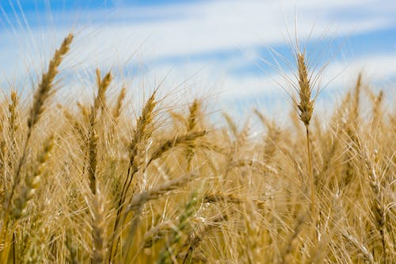

Maize Cultivation and Properties


Soil Properties
- Maize can be grown in a wide range of soil types but prefers well-drained, fertile soils with a pH between
6.0 and 7.5.
- The soil should be rich in organic matter, nitrogen, phosphorus, and potassium.
- The soil should have good water-holding capacity and be able to retain moisture.
Cultivation Process
- Maize is usually grown from seeds, which are sown in rows or hills.
- The ideal planting time for maize is when the soil temperature reaches 60°F (15.5°C) or above.
- Maize requires regular watering and weeding during its growth period.
- Maize is usually harvested when the kernels are fully matured and dry.
Properties of Maize
- Maize is a rich source of carbohydrates, dietary fiber, and protein.
- It also contains vitamins B1, B5, and C, as well as minerals such as iron, magnesium, and phosphorus.
- Maize has a low glycemic index, making it a good choice for people with diabetes or those looking to manage
blood sugar levels.
Ideal Soil Moisture for best production of Maize
- Maize requires a consistent supply of moisture throughout its growth period.
- The ideal soil moisture content for maize production is between 50% and 70% of field capacity.
- Too much water can lead to waterlogging, which can stunt plant growth and reduce yields.
- Insufficient moisture can lead to wilting and reduced yields.